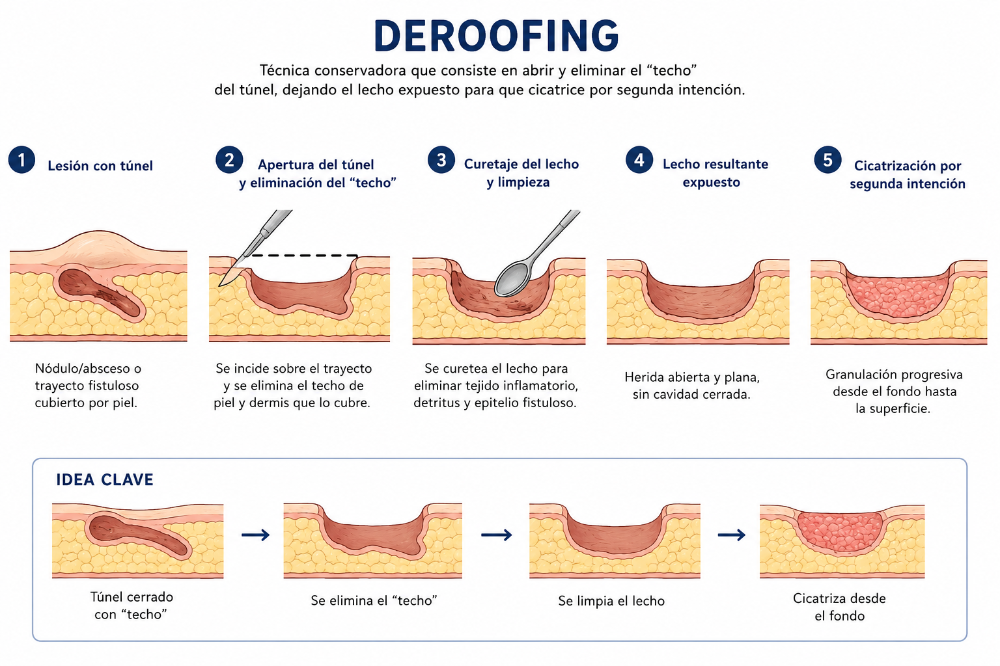
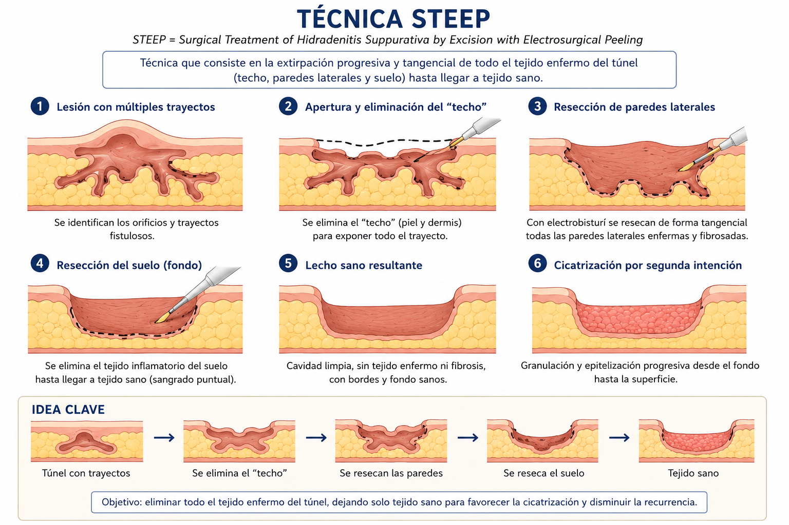
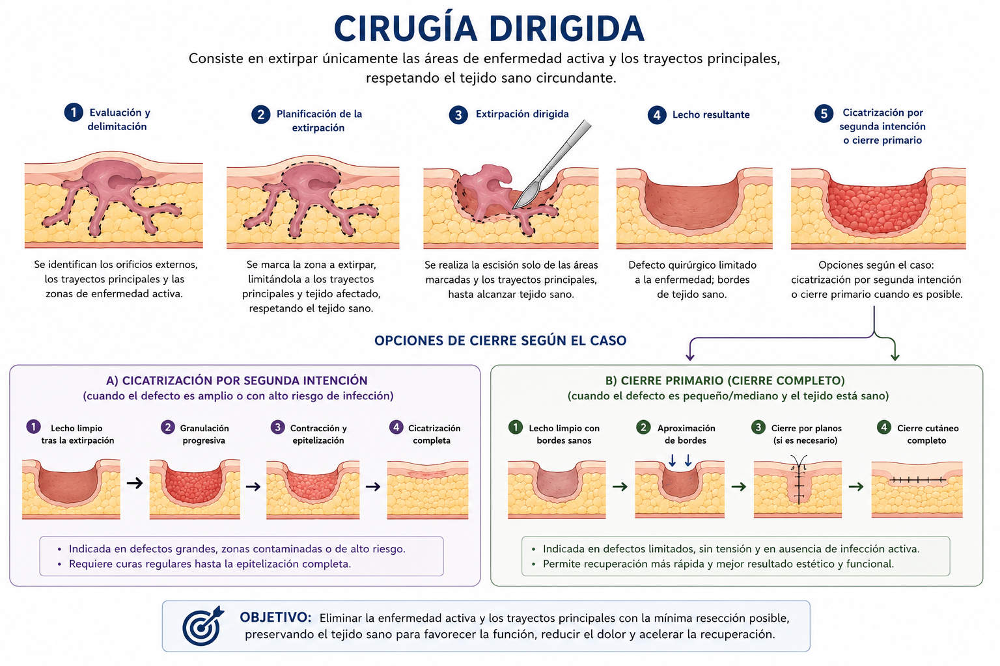

¿Qué es la hidradenitis supurativa perianal?
La hidradenitis supurativa (HS) es una enfermedad inflamatoria crónica de las glándulas apócrinas de la piel, que afecta principalmente a las zonas de pliegues cutáneos: axilas, ingles, zona perianal y perigenital. En su localización perianal, produce nódulos dolorosos, abscesos recurrentes y fístulas que pueden afectar gravemente a la calidad de vida del paciente.
Es más frecuente en adultos jóvenes, con predominio en mujeres, y tiene un importante componente genético y hormonal. El tabaco y la obesidad son factores agravantes reconocidos.
Diagnóstico diferencial: la hidradenitis perianal puede confundirse con enfermedad de Crohn perianal, fístulas anales o abscesos perianales. El Dr. Jaime Jorge Cerrudo realiza el diagnóstico diferencial preciso para orientar el tratamiento más adecuado en cada caso.

Síntomas de la hidradenitis perianal
- Nódulos dolorosos recurrentes en la zona perianal
- Abscesos que drenan espontáneamente o requieren incisión
- Fístulas — trayectos que comunican los nódulos entre sí o con la piel
- Cicatrices y fibrosis de la piel perianal en fases avanzadas
- Supuración crónica con olor y manchado de la ropa interior
- Dolor al sentarse, al defecar o al caminar
Clasificación de Hurley
La clasificación de Hurley es el sistema más utilizado para determinar la gravedad de la hidradenitis supurativa y orientar el tratamiento:
Tratamiento quirúrgico: técnicas individualizadas
El Dr. Jaime Jorge Cerrudo realiza la extirpación de las lesiones de hidradenitis perianal bajo anestesia local en consulta para los casos menos extensos. En los casos más avanzados puede ser necesaria una intervención más amplia bajo anestesia regional o general, asociados a tratamientos biológicos de uso hospitalario.
1. Tratamiento médico preoperatorio con antibióticos
El tratamiento antibiótico previo a la cirugía permite reducir la inflamación activa y facilita la identificación de los elementos clave antes de intervenir:
- Túneles y trayectos fistulosos
- Fibrosis real de la zona afectada
- Límites precisos de la enfermedad
Esto permite planificar una cirugía más precisa y menos invasiva, respetando al máximo el tejido sano circundante.
2. Procedimiento quirúrgico
Valoración y clasificación según escala de Hurley
Anestesia local infiltrativa en la zona perianal
Extirpación mediante la técnica más adecuada al caso
Curas y seguimiento postoperatorio adaptado
La elección de la técnica depende de la extensión, el grado de Hurley y las características individuales de cada paciente:
Deroofing
Técnica conservadora que consiste en abrir y eliminar el "techo" del túnel fistuloso, dejando el lecho expuesto para que cicatrice por segunda intención. Ideal para lesiones con trayectos individuales bien delimitados.

Técnica STEEP
Extirpación progresiva y tangencial de todo el tejido enfermo del túnel — techo, paredes laterales y suelo — hasta llegar a tejido sano. Elimina todo el tejido inflamatorio para favorecer la cicatrización y disminuir la recurrencia.

Cirugía Dirigida
Consiste en extirpar únicamente las áreas de enfermedad activa y los trayectos principales, respetando el tejido sano circundante. Permite cierre primario cuando es posible, o cicatrización por segunda intención en defectos amplios.

4. Tratamiento médico postoperatorio con antibióticos
El tratamiento antibiótico tras la cirugía cumple tres objetivos fundamentales:
- Estabiliza la herida y favorece la cicatrización
- Reduce la inflamación residual en el tejido perilesional
- Disminuye la recurrencia precoz en las semanas posteriores a la intervención
Diagnóstico y tratamiento personalizado
El Dr. Jaime Jorge Cerrudo valora cada caso de hidradenitis perianal de forma individualizada, determinando el grado de Hurley y el tratamiento más adecuado — desde la cirugía menor en consulta hasta la derivación para tratamiento sistémico en casos avanzados.
Clasificación de Hurley en consulta
Extirpación local bajo anestesia local
Diagnóstico diferencial preciso
Seguimiento y control de recidivas